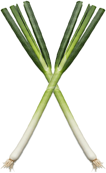

레시피 밸런스 게임
비 오는 날 뜨끈한 샤브샤브
비 오는 날 바삭한 해물 파전

비 오는 날 땡기는 메뉴는?
-
두바이 쫀득 쿠키 (두쫀쿠)
SNS에서 가장 핫한 디저트
#겉쫀속바
#간식
#디저트
👁️ 45.2K
💚 8.7K
💬 234
레시피 보기
-
 📈 TRENDING
📈 TRENDING
길감자 튀김
바삭한 식감의 인기 간식
#간식
#바삭쫀득
#강릉 먹거리
👁️ 32.8K
💚 6.5K
💬 189
레시피 보기
-
라이스페이퍼 떡볶이
건강한 한끼의 새로운 버전
#저칼로리
#쫀득식감
#다이어트식
👁️ 28.5K
💚 5.2K
💬 156
레시피 보기
-
연어깍두기
요즘 핫한 스리라차날치알 연어깍두기
#강민경
#연어
#스리라차
👁️ 21.3K
💚 4.1K
💬 98
레시피 보기